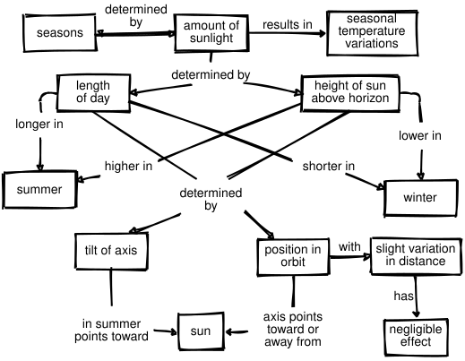
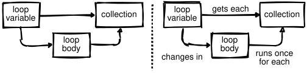
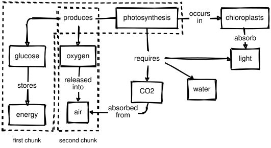

3 Expertise and Memory
Memory is the residue of thought.
— Daniel Willingham, Why Students Don’t Like School
The previous chapter explained the differences between novices and competent practitioners. This one looks at expertise: what it is, how people acquire it, and how it can be harmful as well as helpful. We then introduce one of the most important limits on learning and look at how drawing pictures of mental models can help us turn knowledge into lessons.
To start, what do we mean when we say someone is an expert? The usual answer is that they can solve problems much faster than people who are “merely competent”, or that they can recognize and deal with cases where the normal rules don’t apply. They also somehow make this look effortless: in many cases, they seem to know the right answer at a glance (Parnin et al. 2017).
Expertise is more than just knowing more facts: competent practitioners can memorize a lot of trivia without noticeably improving their performance. Instead, imagine for a moment that we store knowledge as a network or graph in which facts are nodes and relationships are arcs1. The key difference between experts and competent practitioners is that experts’ mental models are much more densely connected, i.e. they are more likely to know a connection between any two facts.
The graph metaphor explains why helping learners make connections is as important as introducing them to facts: without those connections, people can’t recall and use what they know. It also explains many observed aspects of expert behavior:
Experts can often jump directly from a problem to a solution because there actually is a direct link between the two in their mind. Where a competent practitioner would have to reason A→B→C→D→E, an expert can go from A to E in a single step. We call this intuition: instead of reasoning their way to a solution, the expert recognizes a solution in the same way that they would recognize a familiar face.
Densely-connected graphs are also the basis for experts’ fluid representations, i.e. their ability to switch back and forth between different views of a problem (Petre and van der Hoek 2016). For example, when trying to solve a problem in mathematics, an expert might switch between tackling it geometrically and representing it as a set of equations.
This metaphor also explains why experts are better at diagnosis than competent practitioners: more linkages between facts makes it easier to reason backward from symptoms to causes. (This in turn is why asking programmers to debug during job interviews gives a more accurate impression of their ability than asking them to program.)
Finally, experts are often so familiar with their subject that they can no longer imagine what it’s like to not see the world that way. This means they are often less able to teach the subject than people with less expertise who still remember learning it themselves.
The last of these points is called expert blind spot. As originally defined in (Nathan and Petrosino 2003), it is the tendency of experts to organize explanation according to the subject’s deep principles rather than being guided by what their learners already know. It can be overcome with training, but it is part of reason there is no correlation between how good someone is at doing research in an area and how good they are at teaching it (Marsh and Hattie 2002).
Experts often betray their blind spot by using the word “just,” as in, “Oh, it’s easy, you just fire up a new virtual machine and then you just install these four patches to Ubuntu and then you just re-write your entire program in a pure functional language.” As we discuss in Chapter 10, doing this signals that the speaker thinks the problem is trivial and that the person struggling with it must therefore be stupid, so don’t do this.
3.1 Concept Maps
Our tool of choice for representing someone’s mental model is a concept map, in which facts are bubbles and connections are labeled connections. As examples, Figure 3.1 shows why the Earth has seasons (from IHMC), and Appendix G presents concept maps for libraries from three points of view.

To show how concept maps can be using in teaching programming, consider this for loop in Python:
for letter in "abc":
print(letter)whose output is:
a
b
cThe three key “things” in this loop are shown in the top of Figure 3.2, but they are only half the story. The expanded version in the bottom shows the relationships between those things, which are as important for understanding as the concepts themselves.

for loop
Concept maps can be used in many ways:
- Helping teachers figure out what they’re trying to teach.
- A concept map separates content from order: in our experience, people rarely wind up teaching things in the order in which they first drew them.
- Aiding communication between lesson designers.
- Teachers with very different ideas of what they’re trying to teach are likely to pull their learners in different directions. Drawing and sharing concept maps can help prevent this. And yes, different people may have different concept maps for the same topic, but concept mapping makes those differences explicit.
- Aiding communication with learners.
- While it’s possible to give learners a pre-drawn map at the start of a lesson for them to annotate, it’s better to draw it piece by piece while teaching to reinforce the ties between what’s in the map and what the teacher said. We will return to this idea in Section 4.1.
- For assessment.
- Having learners draw pictures of what they think they just learned shows the teacher what they missed and what was miscommunicated. Reviewing learners’ concept maps is too time-consuming to do as a formative assessment during class, but very useful in weekly lectures once learners are familiar with the technique. The qualification is necessary because any new way of doing things initially slows people down—if a learner is trying to make sense of basic programming, asking them to figure out how to draw their thoughts at the same time is an unfair load.
Some teachers are also skeptical of whether novices can effectively map their understanding, since introspection and explanation of understanding are generally more advanced skills than understanding itself. For example, (Keppens and Hay 2008) looked at the use of concept mapping in computing education. One of their findings was that, “…concept mapping is troublesome for many students because it tests personal understanding rather than knowledge that was merely learned by rote.” As someone who values understanding over rote knowledge, I consider that a benefit.
When first asked to draw a concept map, many people will not know where to start. When this happens, write down two words associated with the topic you’re trying to map, then draw a line between them and add a label explaining how those two ideas are related. You can then ask what other things are related in the same way, what parts those things have, or what happens before or after the concepts already on the page in order to discover more nodes and arcs. After that, the hard part is often stopping.
Concept maps are just one way to represent our understanding of a subject (Eppler 2006); others include Venn diagrams, flowcharts, and decision trees (Abela 2009). All of these externalize cognition, i.e. make mental models visible so that they can be compared and combined2.
Many user interface designers believe that it’s better to show people rough sketches of their ideas rather than polished mock-ups because people are more likely to give honest feedback on something that they think only took a few minutes to create: if it looks as though what they’re critiquing took hours to create, most will pull their punches. When drawing concept maps to motivate discussion, you should therefore use pencils and scrap paper (or pens and a whiteboard) rather than fancy computer drawing tools.
3.2 Seven Plus or Minus Two
While the graph model of knowledge is wrong but useful, another simple model has a sounder physiological basis. As a rough approximation, human memory can be divided into two distinct layers. The first, called long-term or persistent memory, is where we store things like our friends’ names, our home address, and what the clown did at our eighth birthday party that scared us so much. Its capacity is essentially unlimited, but it is slow to access—too slow to help us cope with hungry lions and disgruntled family members.
Evolution has therefore given us a second system called short-term or working memory. It is much faster, but also much smaller: (Miller 1956) estimated that the average adult’s working memory could only hold 7±2 items at a time. This is why phone numbers are 7 or 8 digits long: back when phones had dials instead of keypads, that was the longest string of numbers most adults could remember accurately for as long as it took the dial to go around several times.
The size of working memory is sometimes used to explain why sports teams tend to have about half a dozen members or are broken into sub-groups like the forwards and backs in rugby. It is also used to explain why meetings are only productive up to a certain number of participants: if twenty people try to discuss something, either three meetings are going on at once or half a dozen people are talking while everyone else listens. The argument is that people’s ability to keep track of their peers is constrained by the size of working memory, but so far as I know, the link has never been proven.
7±2 is the single most important number in teaching. A teacher cannot place information directly in a learner’s long-term memory. Instead, whatever they present is first stored in the learner’s short-term memory, and is only transferred to long-term memory after it has been held there and rehearsed (Section 5.1). If the teacher presents too much information too quickly, the new information displaces the old before the latter is transferred.
This is one of the ways to use a concept map when designing a lesson: it helps make sure learners’ short-term memories won’t be overloaded. Once the map is drawn, the teacher chooses a subsection that will fit in short-term memory and lead to a formative assessment (Figure 3.3), then adds another subsection for the next lesson episode and so on.

The next time you have a team meeting, give everyone a sheet of paper and have them spend a few minutes drawing their own concept map of the project you’re all working on. On the count of three, have everyone reveal their concept maps to their group. The discussion that follows may help people understand why they’ve been tripping over each other.
Note that the simple model of memory presented here has largely been replaced by a more sophisticated one in which short-term memory is broken down into several modal stores (e.g. for visual vs. linguistic memory), each of which does some involuntary preprocessing (Miller 2016). Our presentation is therefore an example of a mental model that aids learning and everyday work.
Pattern Recognition
Recent research suggests that the actual size of short-term memory might be as low as 4±1 items (Didau and Rose 2016). In order to handle larger sets of information, our minds create chunks. For example, most of us remember words as single items rather than as sequences of letters. Similarly, the pattern made by five spots on cards or dice is remembered as a whole rather than as five separate pieces of information.
Experts have more and larger chunks than non-experts, i.e. experts “see” larger patterns and have more patterns to match things against. This allows them to reason at a higher level and to search for information more quickly and more accurately. However, chunking can also mislead us if we misidentify things: newcomers really can sometimes see things that experts have looked at and missed.
Given how important chunking is to thinking, it is tempting to identify design patterns and teach them directly. These patterns help competent practitioners think and talk to each other in many domains (including teaching (Bergin et al. 2012)), but pattern catalogs are too dry and too abstract for novices to make sense of on their own. That said, giving names to a small number of patterns does seem to help with teaching, primarily by giving the learners a richer vocabulary to think and communicate with Sajaniemi et al. (2006). We will return to this in Section 7.5.
3.3 Becoming an Expert
So how does someone become an expert? The idea that ten thousand hours of practice will do it is widely quoted but probably not true: doing the same thing over and over again is much more likely to solidify bad habits than improve performance. What actually works is doing similar but subtly different things, paying attention to what works and what doesn’t, and then changing behavior in response to that feedback to get cumulatively better. This is called deliberate or reflective practice, and a common progression is for people to go through three stages:
- Act on feedback from others.
- A learner might write an essay about what they did on their summer holiday and get feedback from a teacher telling them how to improve it.
- Give feedback on others’ work.
- The learner might critique character development in a Harry Potter novel and get feedback from the teacher on their critique.
- Give feedback to themselves.
- At some point, the learner starts critiquing their own work as they do it using the skills they have now built up. Doing this is so much faster than waiting for feedback from others that proficiency suddenly starts to take off.
(Macnamara et al. 2014) found that, “…deliberate practice explained 26% of the variance in performance for games, 21% for music, 18% for sports, 4% for education, and less than 1% for professions.” However, (Ericsson 2016) critiqued this finding by saying, “Summing up every hour of any type of practice during an individual’s career implies that the impact of all types of practice activity on performance is equal—an assumption that…is inconsistent with the evidence.” To be effective, deliberate practice requires both a clear performance goal and immediate informative feedback, both of which are things teachers should strive for anyway.
3.4 Exercises
3.4.1 Concept Mapping (pairs/30 min)
Draw a concept map for something you would teach in five minutes. Trade with a partner and critique each other’s maps. Do they present concepts or surface detail? Which of the relationships in your partner’s map do you consider concepts and vice versa?
3.4.2 Concept Mapping (Again) (small groups/20 min)
Working in groups of 3–4, have each person independently draw a concept map showing their mental model of what goes on in a classroom. When everyone is done, compare the concept maps. Where do your mental models agree and disagree?
3.4.3 Enhancing Short-Term Memory (individual/5 minutes min)
(Cherubini et al. 2007) suggests that the main reason people draw diagrams when they are discussing things is to enlarge their short-term memory: pointing at a wiggly bubble drawn a few minutes ago triggers recall of several minutes of debate. When you exchanged concept maps in the previous exercise, how easy was it for other people to understand what your map meant? How easy would it be for you if you set it aside for a day or two and then looked at it again?
3.4.4 That’s a Bit Self-Referential, Isn’t It? (whole class/30 min)
Working independently, draw a concept map for concept maps. Compare your concept map with those drawn by other people. What did most people include? What were the significant differences?
3.4.5 Noticing Your Blind Spot (small groups/10 min)
Elizabeth Wickes listed all the things you need to understand in order to read this one line of Python:
answers = ['tuatara', 'tuataras', 'bus', "lick"]The square brackets surrounding the content mean we’re working with a list (as opposed to square brackets immediately to the right of something, which is a data extraction notation).
The elements are separated by commas outside and between the quotes (rather than inside, as they would be for quoted speech).
Each element is a character string, and we know that because of the quotes. We could have number or other data types in here if we wanted; we need quotes because we’re working with strings.
We’re mixing our use of single and double quotes; Python doesn’t care so long as they balance around the individual strings.
Each comma is followed by a space, which is not required by Python, but which we prefer for readability.
Each of these details might be overlooked by an expert. Working in groups of 3–4, select something equally short from a lesson you have recently taught or learned and break it down to this level of detail.
3.4.6 What to Teach Next (individual/5 min)
Refer back to the concept map for photosynthesis in Figure 3.3. How many concepts and links are in the selected chunks? What would you include in the next chunk of the lesson and why?
3.4.7 The Power of Chunking (individual/5 min)
Look at Figure 3.4 for 10 seconds, then look away and try to write out your phone number with these symbols3 (Use a space for ‘0’.) When you are finished, look at the alternative representation in Appendix H. How much easier are the symbols to remember when the pattern is made explicit?